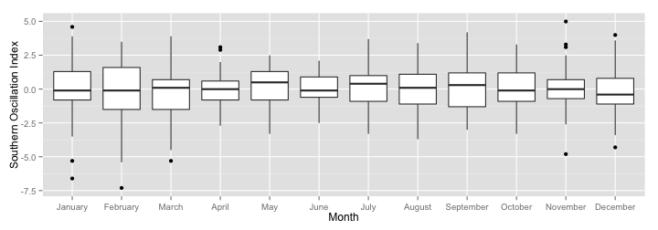
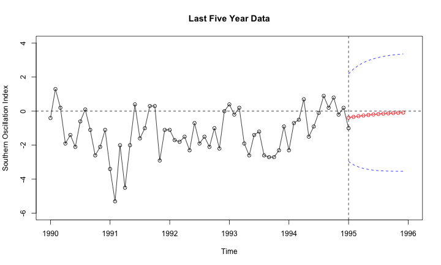

Your browser doesn't support the features required by impress.js, so you are
presented with a simplified version of this presentation.
For the best experience please use the latest Chrome, Safari or Firefox
browser.
title : TS Final Project
subtitle : Southern Oscillation Index
author : Xiang Liu (Dennis)
Data Information
Variable: Monthly values of the Southern Oscillation Index (SOI)
Yearly Data: 1950-1994 (540 monthly observations)
Time Series Plot
1. Time series overall seems to be stationary with little bit increasing variance since 1980.
2. The Southern Oscillation Index (SOI) is the monthly fluctuations of air pressure difference between Tahiti and Darwin
3. The consistent negative phase of the SOI represents a below-normal air pressure at Tahiti and above-normal air pressure at Darwin- El Niño (vice versa for positive value).
Check Stationary Process


- 1: Both ACF and PACF plots show signs of stationary and suggest us to take a look at AR(p) model.
- 2: Agmented Dickey-Fuller test also supports my thought. It's stationary at the p-value of 0.01.
Decomposition Process
- 1: Trend seem to be harmonic
- 2: There seems to be a strong pattern of seasonality, but let's find it out.
Nonlinear Transformation


- 1. Although lambda=1 isn't included in the 95% CI of BoxCox plot, high log liklihood still holds for non-transformation
- 2. There is a significant linear relationship between Ln(mean) and Ln(sd) and the parameter is 1.0 which suggests me not to take transformation (am I correct?)
- Since it's stationary already, let's go further to find if there is seasonality*
Time Series Plot of Seasonality

- no strong seasonal pattern is detected, which doesn't seem to make sense to me!
Cumulative Periodgram

- 1. It doens't look like white noise
- 2. There is no sudden jump at freq=0.8 which supports my hypothesis of no seasonality
- 3. More variance goes to the low frequencies.
Spectral Analysis

- 1. No matter if I detrend the data or not, the periodplot spike at a period of 60 month (5 years).
- 2. As expected, strong pattern is seen at low frequencies.
- 3. Still, it's odd not to see any seasonality given this is a climate index monthly data (freq=0.8)
Next Step Let's fit an Arima model
ACF and PACF


Model Specification
AR(p) Differencing MA(q) AIC
1 1 0 0 1852.783
2 1 0 1 1809.810
3 1 0 2 1811.795
4 1 0 3 1813.340
5 1 1 0 1867.570
6 1 1 1 1834.927
7 1 1 2 1812.566
8 1 1 3 1814.552
- 1. Since AIC suggests AR(1) and PAIC suggests an MA(1), I decide to take a look at all possibilities of ARIMA models
- 2. It seems that ARIMA(1,0,1) model has the smallest AIC value
Model Diagnose

ARIMA(1,0,1)
ar1 ma1
0.8756591 -0.4333258
- both AR and MA parameters are significant to be included in the model
ARIMA(1,1,2)
ar1 ma1 ma2
0.8764892 -1.4295726 0.4318771
- 1. The model suggested by algorithms has higher AIC
- 2. Moreover, the \(\theta_2\) isn't significant to be in the model.
Model Forecast

- Using a built-up model to predict 12 month data approaching the future, the graph is good at forecasting the future values of the SOI index.
- It seems that SOI tend to go higher in the future and suggests more balanced climate at nothern Australia.(may need to further read some literature to interpret the data)
Thank You for Listening